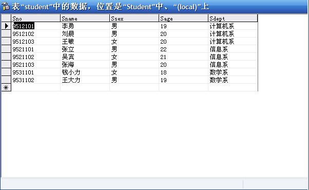
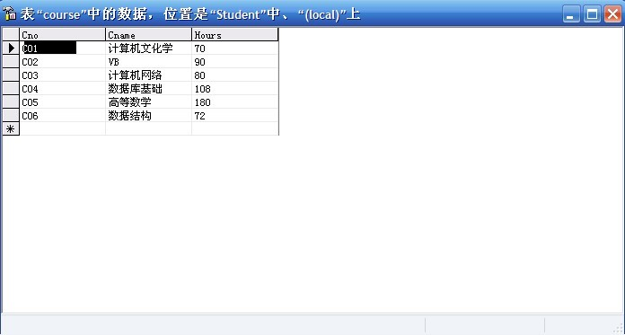
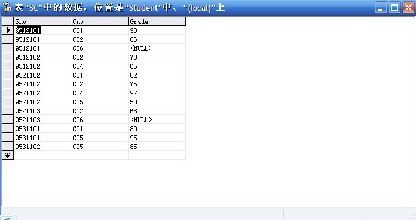

本篇文章简单介绍一下sql以及分享一个sql练习，答案仅供参考
SQL
结构化查询语言
数据库–关系型数据库 OLTP
mysql oracle sqlserver
sql分类
ddl 数据定义语句
dml 数据管理语句
dql 数据查询语句
dcl 数据控制语句
ddl 数据定义语句（掌握）
create drop alter…dml 数据管理语句（掌握）
INSERT update DELETE…dql数据查询语句（熟练掌握）
SELECT…dcl 数据控制语句（了解）
GRANT…where 子句
>,<,>=,<=,!=,<>,=,between AND ,in,LIKE,IS,NOT,AND,OR
dql执行顺序
| 名字 | 顺序 |
|---|---|
| SELECT | 6 |
| DISTINCT | 7 |
| FROM | 1 |
| JOIN | 3 |
| ON | 2 |
| WHERE | 4 |
| group by | 5 |
| HAVING | 8 |
| order by | 9 |
| limit | 10 |
约束
唯一 当前列的值只能是唯一的（不包括null）
不为空（null） 但前列能不有null值
主键 唯一+非空
外键
事务 （innodb）
ACID
设置手动提交
set autocommit = 0;设置自动提交
set autocommit = 1;开启事务
BEGIN提交
COMMIT回滚
ROLLBACK
事务隔离级别 （从小到大）（工作效率从大到小）
未提交（Read uncommitted）
读提交（read committed） (oracle)
可重复读（repeatable read）（mysql）
串行化（Serializable）
mysql优化
INDEX
索引：提高查询效率EXPLAIN
执行计划
练习（MySQL数据库）
数据库中有三张表，分别为student,course,SC（即学生表，课程表，选课表）
//三张表截图如下：



1 | 1.分别查询学生表和学生修课表中的全部数据。 |